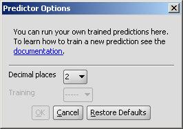
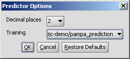

Predictor can be applied for molecular property prediction based on structure. Experimental data sets are analyzed and a calculation method applied in cases where molecular properties can be expressed as the sum of atomic contributions. The method is based on QSAR algorithm using a multiple linear regression model and a least squares fitting.
The training of the calculator with your experimental data of your chemical compounds will create a trainig set file saved to your home directory, that can be used by Marvin's predictor plugin. A dropdown list will contain all the training sets you have created. For the training of the plugin, see this page.
In the Predictor panel you can choose the training you want to make the prediction with:
|  | The options are inactive and a short help text appears if you have not created any training sets. |
|  | The options are active. you can choose the training set to apply from the dropdown list. |
Options